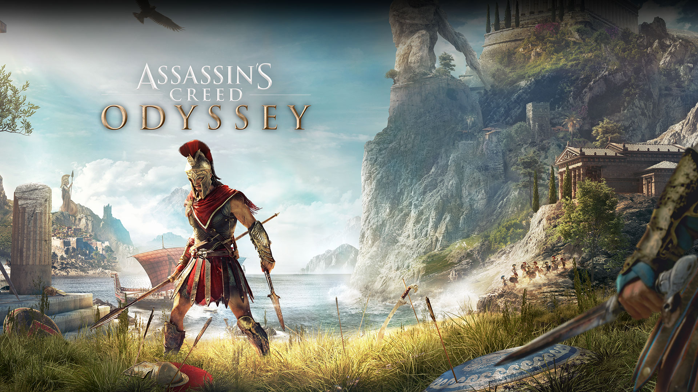
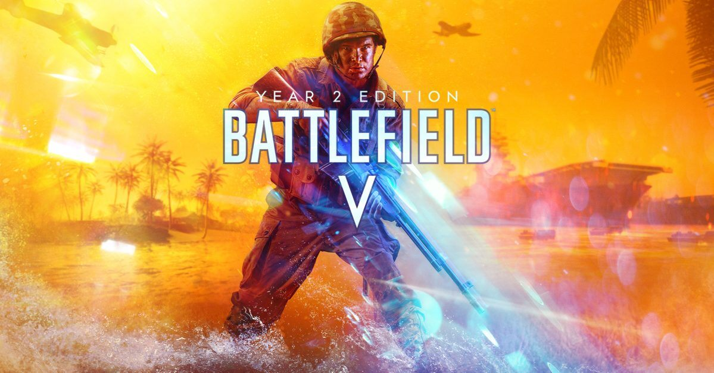

Melhores jogos na minha opinião
1. Shadow of the Colossus

SHADOW OF THE COLOSSUS é uma jornada espetacular por terras antigas em busca de feras gigantes. Armado com uma espada e um arco, explore os vastos terrenos e revele cada Colossus, cada um com um desafio único para testar sua inteligência, determinação e habilidade.
Link para comprar e baixar o Shadow of the Colossus2. Ori and the will of the wisps

Descubra o verdadeiro destino de Ori. Embarque em uma jornada em um mundo vasto e exótico, com inimigos gigantescos e quebra-cabeças desafiadores nesta sequência imperdível
Link para comprar e baixar o Ori of the Wisps3. Assassin's creed Odissey
Assassin's Creed Odyssey, uma aventura inspiradora em que deve forjar seu destino e definir seu próprio caminho em um mundo à beira da destruição. Influencie o desenvolvimento da história e vivencie um mundo rico em constante mudança devido às suas decisões.
Link para comprar e baixar o Assassins creed Odyssey4. Watch dogs 2
.jpg)
Jogue como Marcus Holloway, um hacker genial no berço da revolução tecnológica, a área da baía de São Francisco. Junte-se ao Dedsec, um grupo notório de hackers, para executar o maior hack da história; derrube o ctOS 2.0, um sistema operacional invasivo que está sendo usado por um gênio do crime para monitorar e manipular os cidadãos em uma escala massiva.
Link para comprar e baixar o Watch Dogs 25. Battlefield V
Entra no maior conflito da humanidade em terra, ar e mar com todo o conteúdo de jogo desbloqueado desde o início.
Link para comprar e baixar o Battlefield V